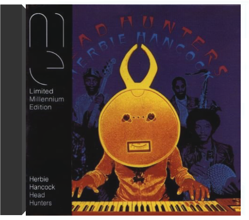

Après le succès phénoménal des différents livres d'Harry Potter, cette première adaptation cinématographique se devait d'avoir comme compositeur l'un des plus célèbres musiciens de bandes originales : John Williams. Comme à son habitude, l'auteur de La Guerre des étoiles, et récemment de A.I., ne rate pas sa cible. Dès l'ouverture, John Williams propose un thème jovial, quasi chevaleresque et féerique, dans la lignée de chefs-d'œuvre musicaux tels que Hook et Les Sorcières d'Eastwick. Même frivolité dans les cordes, même puissance dans les cuivres, "Prologue" et "Harry Wondrous World" nous rappellent les grandes envolées williamsiennes que l'on a tous en mémoire. À la tête du London Symphony Orchestra, l'auteur s'en donne à cœur joie – "The Quidditch Match", "The Library Scenes" – et impose son style grandiloquent à chaque morceau. L'orchestre virevolte comme au plus belles heures de Superman, l'aspect magique en plus. À l'image de ce jeune héros, John Williams insuffle à sa partition une légèreté et une innocence toute particulière. Il en résulte des passages tantôt euphoriques – "The Flying Keys" –, tantôt empreints d'une nostalgie enfantine époustouflante : "Mr. Longbottom Flies". Une mention particulière à "The Invisibility Cloak", qui voit Harry Potter en plein tourment de sorcellerie, un must irrésistiblement humoristique. À noter qu'un second CD – CD- Rom cette fois-ci – est joint à la partition, comprenant entre autres des bandes-annonces, les previews des jeux électroniques, et un écran de veille. —Didier Leprêtre harry potter and the chamber of secretsharry potter Phénomène de librairie, la saga ensorcelante de J.K. Rowling dévoile son aptitude à faire rêver des générations de lecteurs, de spectateurs… et de mélomanes. Ce n'est pas un hasard si les couloirs de Poudlard sont traversés par les notes enchanteresses d'un compositeur qui maîtrise la magie musicale (Hook ou Les Sorcières d'Eastwick et Maman j'ai raté l'avion I et II, avec le même Chris Columbus). Pas toujours évidente dans Harry Potter à l'école des sorciers, la magie resplendit ici de tous ses feux. Adaptée et dirigée avec brio par le surprenant William Ross, la partition de John Williams ouvre la chambre des secrets avec une classe qui nous replonge dans le meilleur de sa maestria symphonique. Impossible de ne pas entendre les échos d'Indiana Jones ou de Dracula en écoutant l'impressionnant "The Spiders", le massif "Dueling The Basilik" ou encore le superbe morceau-titre. Tout ce qui fait la légende de John Williams se retrouve dans Harry Potter et la chambre des secrets, bain de jouvence qui enchante par son orchestration colorée, sa direction enlevée, sa thématique envoûtante et son merveilleux générique de fin en trois parties ("Harry's Wondrous World", "Fawkes The Phoenix", "The Chamber Of Secrets"). Du grand art. Jean-Christophe Arlon  head huntersherbie hancock Suivant l'exemple de Miles Davis, Herbie Hancock, dès 1970, va lui aussi innover, tremper son art dans la fusion. La musique de son sextette, un jazz électro-acoustique et expérimental, est encore beaucoup trop savante et cérébrale pour un jeune public malgré de longs ostinatos funky et le recours fréquent à des rythmes binaires. Pour mieux se faire comprendre, Herbie va alors simplifier, proposer un jazz funk beaucoup plus charnel dans le cadre d'un nouveau groupe, les Headhunters, mieux adapté à son désir de renouer avec ses racines africaines au sein d'une instrumentation digne des plus grands groupes funk de l'époque, la musique de Sly Stone servant de modèle. Ne conservant que Bennie Maupin de l'équipe précédente - il joue de très nombreux instruments à vent et apporte ainsi une grande variété de couleurs à la formation - Herbie au piano électrique et aux synthétiseurs frappe alors un grand coup avec l'enregistrement en 1973 de l'album Head Hunters, un immense tube "Chameleon" et une reprise de son célèbre "Watermelon Man" lui assurant un succès planétaire. —Pierre de Chocqueuse |  Ten years ago, Ikebe Shakedown began pushing the boundaries of instrumental music. Each new track and live set has sent them deeper into combining the primal elements of '70s soul, raw psychedelic style, and cinematic Western soundtracks with powerful grooves and soaring melodies. Now, with their new release, Kings Left Behind (Colemine Records), the band is giving listeners more mystery and majesty than ever before. The album features the entire group collaborating to produce tracks that deliver punches right to the gut, even as dreamy guitars and lush horn melodies and string arrangements capture the imagination. The album was recorded by Ikebe's bassist, Vince Chiarito, at Hive Mind Recording. Opened with Ikebe's saxophonist, Mike Buckley, and another collaborator in 2017, Hive Mind has become a home base for the band, leading to more experimentation with the textures and sounds of a genre they define as Instrumental Soul.  Un rapide coup d'oeil au CV d'Incubus permet de mieux cerner la musique du groupe. Ainsi leur metal a-t-il retenu l'attention de Les Claypool du groupe Primus et Jonathan Davis de Korn : sacrée carte de visite pour qui pratique une fusion qui les associe, côté qualité, aux leaders du genre que sont Rage Against The Machine, Fishbone et Red Hot Chili Peppers ! Prompt à réveiller un mort, Make Yourself est un coup de pied au cul marquant une étape supplémentaire dans l'ascension du groupe. Ouvert aux grooves de l'electronica funkoïde ("Battlestar Scralatchtica") comme à la drum'n'bass, ce disque fait la part belle à la voix de Brandon Boyd portée par d'énormes riffs de guitares métalliques. Décoiffant. — Hervé Comte  Lentement mais sûrement, Incubus, longtemps affublé de la réductrice étiquette "neo-metal", se fait un nom. Un succès largement mérité, tant le groupe fait preuve de talent et d'originalité. Ses mélodies accrocheuses sont des écrins pour la voix incroyable de Brandon Boyd (qui en plus est assez plaisant à regarder... hors sujet, peut-être, mais tellement vrai !). Mixant joyeusement rock, metal et reggae ou musique asiatique, ce quatrième album du groupe, digne successeur de Make Yourself, ne fait pas exception à la règle. Quitte à prendre le train Incubus en marche, c'est le moment ou jamais ! —Juliette Legouy |

Julien
Collection Total:
1 944 Items
1 944 Items
Last Updated:
Apr 16, 2022
Apr 16, 2022


 Made with Delicious Library
Made with Delicious Library